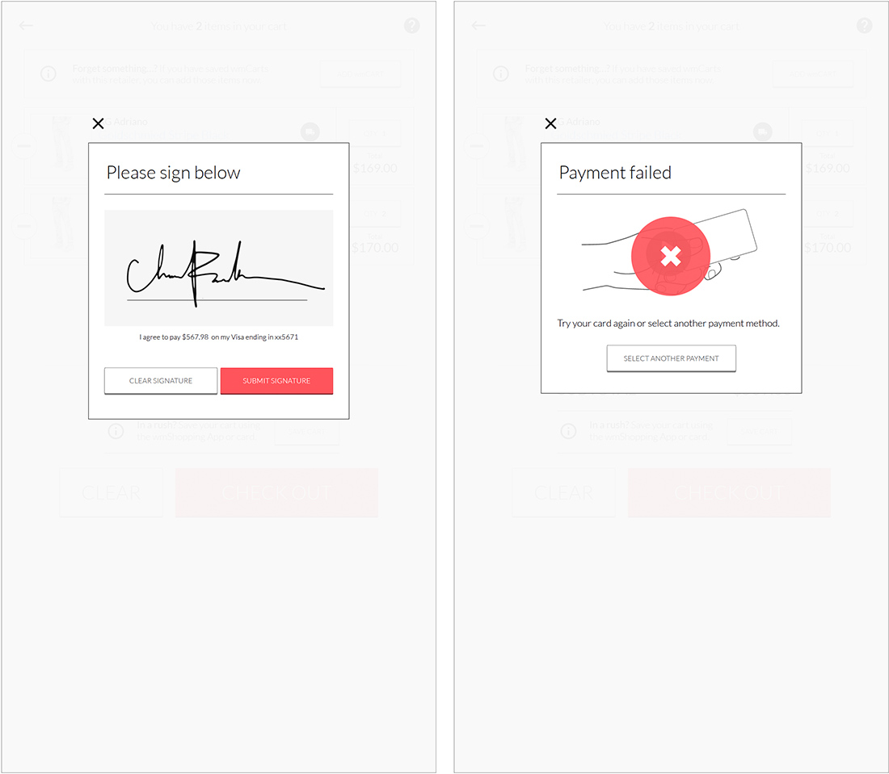

Shop WithMe
ShopWithMe is an on-demand retail platform for brands to quickly open turnkey omni-channel stores in major cities.
Product Overview
WithMe™ designs, builds and leases short-term omni-channel retail stores for brands and retailers across the world. Their mission is to create the largest global network of micro automated retail stores to help brands of all sizes grow exponentially.
“ShopWithMe is driven by the idea that online and offline shopping experiences complement and reflect the best of both channels”
The New Idea
The ShopWithMe interactive “Smart Stores” stores combine the best of online and in-store retail shopping experiences. They quickly integrate a retailer’s or brand’s content and inventory to offer a fully integrated and branded shopping experience anywhere.
WithMe wanted a unique shopping experience, via custom made kiosk, in their modern shops. I was tasked with an end to end design for the entire shopping experience. It was one of a kind application and the idea was new to the entire market.
The WithMe consumer experience combines a mix of online and offline shopping behaviour that benefits both the customer and the retailer. A hand-picked selection of products is showcased to touch and try in-store along with an "endless aisle" of other options that can be purchased through self-checkout kiosks and picked-up via a dispensing machine on site or delivered to their home.
UX Research and Analysis
Shop WithMe is a unique application, with varying audiences, with an ever-growing list of brands & product offerings, and a desperate need to think and structure the presentation of information.
Because of the large amount of content, we sought to contrast the bulkiness of design by creating a more airy look and feel, relying heavily on whitespace, readability and information hierarchy. Devising repeatable modules allowed us to create consistency in the interface for the user, and streamline our design and development of other pages.

Design Philosophy
The new app honors their commitment to the client experience, with easy-to-navigate actions, palatable verbiage that communicates a lot without overwhelming the reader, and dialed-up custom photography and video for aesthetic benefit and storytelling.
Fashion industry where content often suffers because of lengthiness and legalese, we knew we needed to find opportunities to add visual interest. Ultimately we created a variety of page templates but made sure to create repeatable content modules, not only to create ease in design and development, but also to create consistency across pages. ShopWithMe is a particularly successful example of spending more time in wireframing so that the design phase is informed and efficient.
Wireframing & Prototyping
Usability and visual design help shape the product’s story. Testing it at different stages helps us to refine the story and validate the assumptions.
The client uses the tool for remote usability testing with potential users to see if what we are building actually works. We created a plan of the tasks we wanted to test, created a prototype and a discussion guide. Then we run the test and made revisions to the prototype.


Feedback provided by the test users, helped us to regroup and rework some of our wireframes to improve the user experience. The test users tried to complete typical tasks, where we measured Effectiveness, Efficiency and satisfaction.